プロジェクト
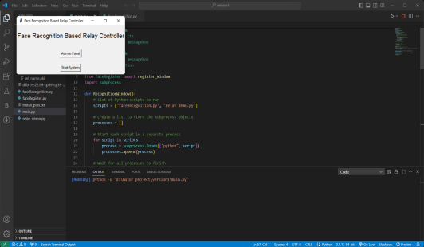
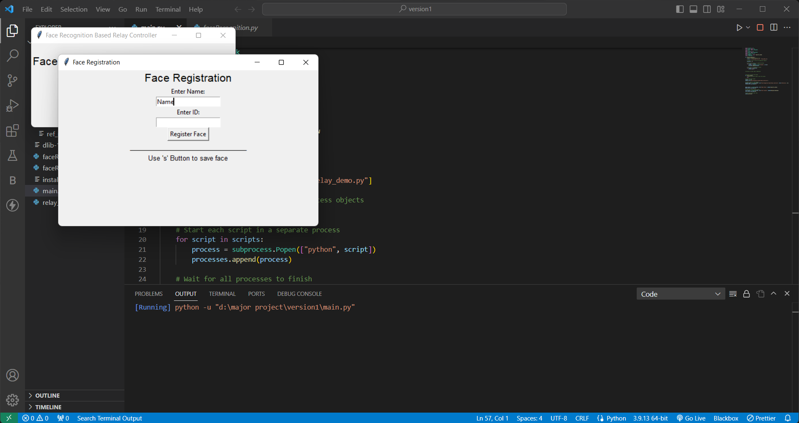
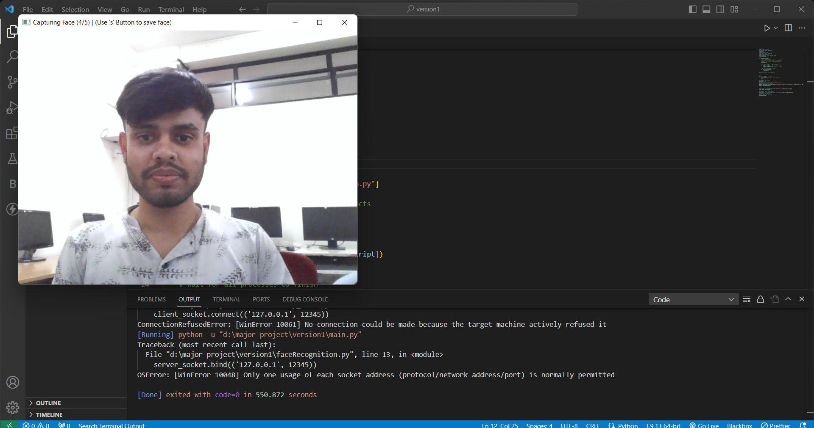
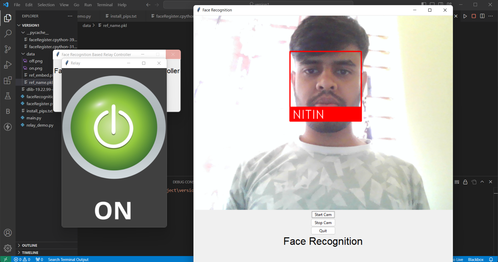 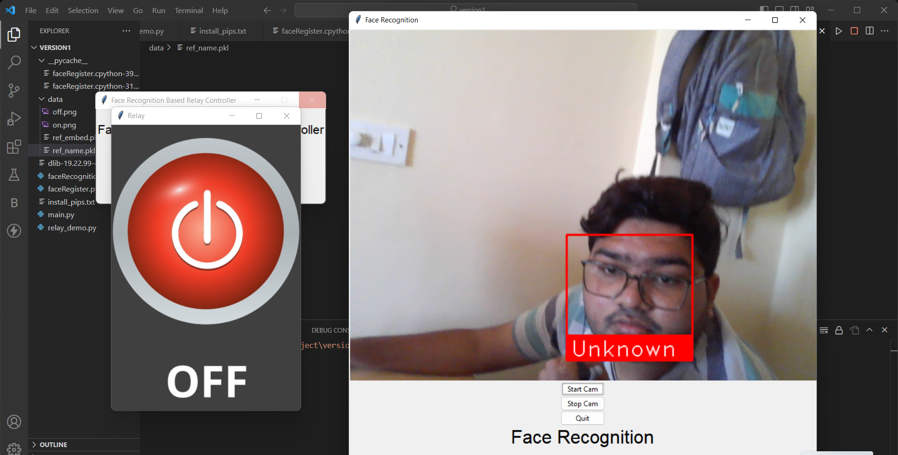 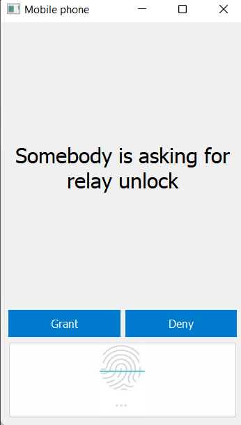
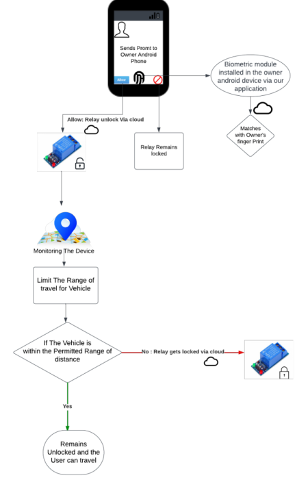
Took a Udemy course where I got to learn various aspects of AR and had a hands-on experience while working with ARONE app database from Vuforia, unity, C# programming, and building amazing AR applications such as
Project 3 : Highway road lane detector
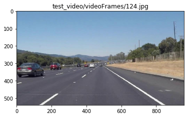 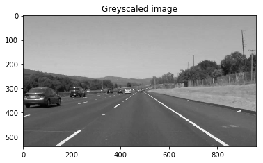 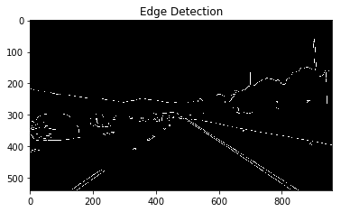 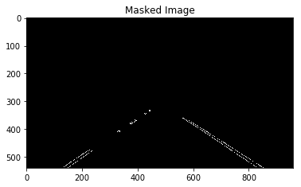 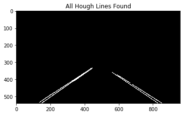 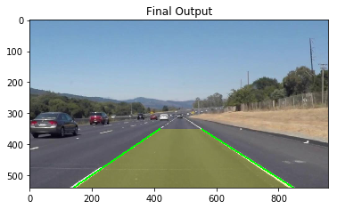
Project 4 : Smart Attendance manager using python
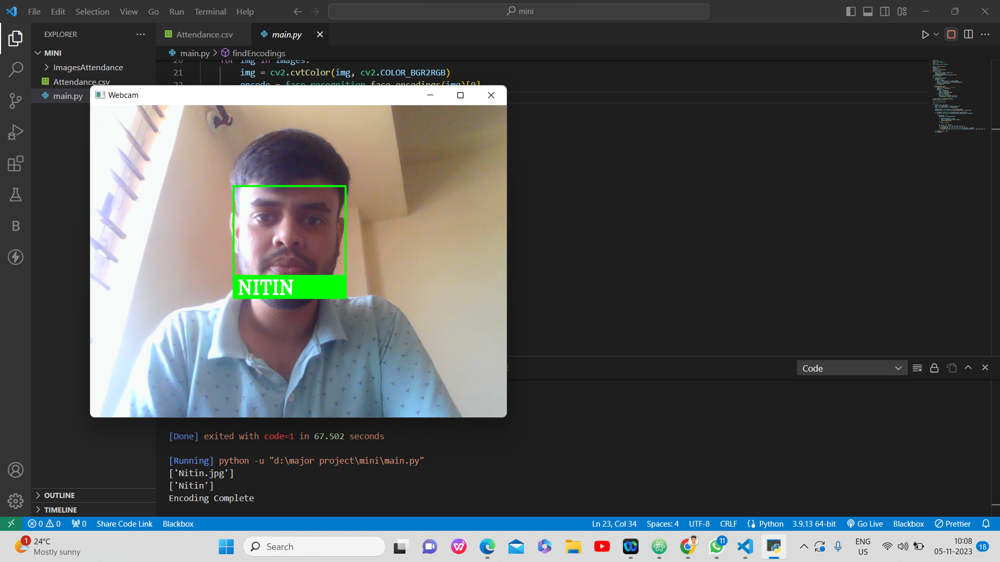 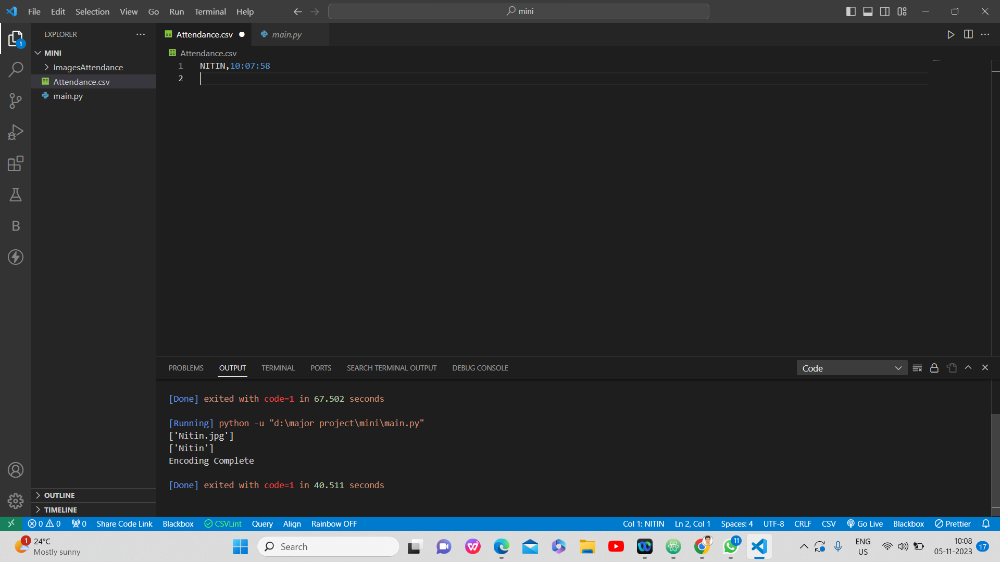
Description of project 4.